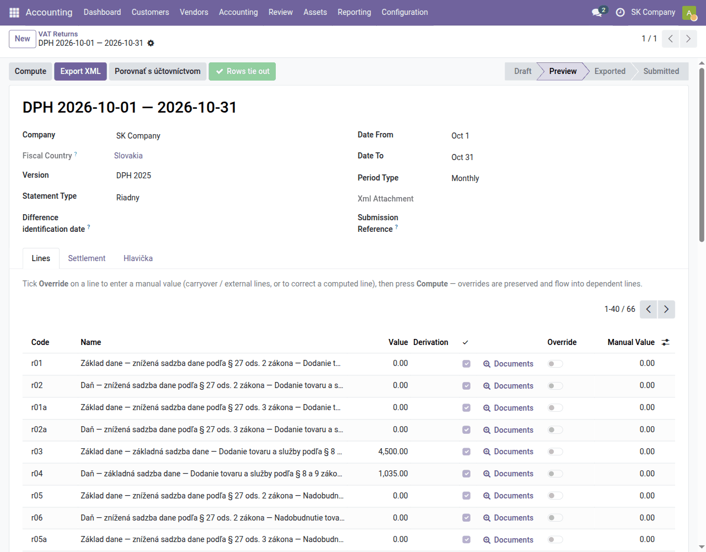
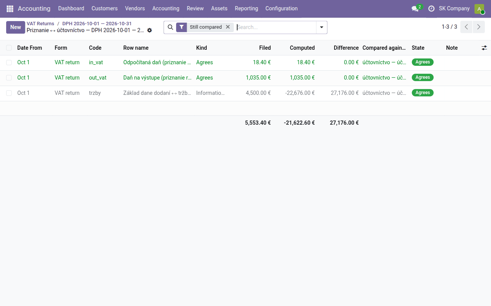
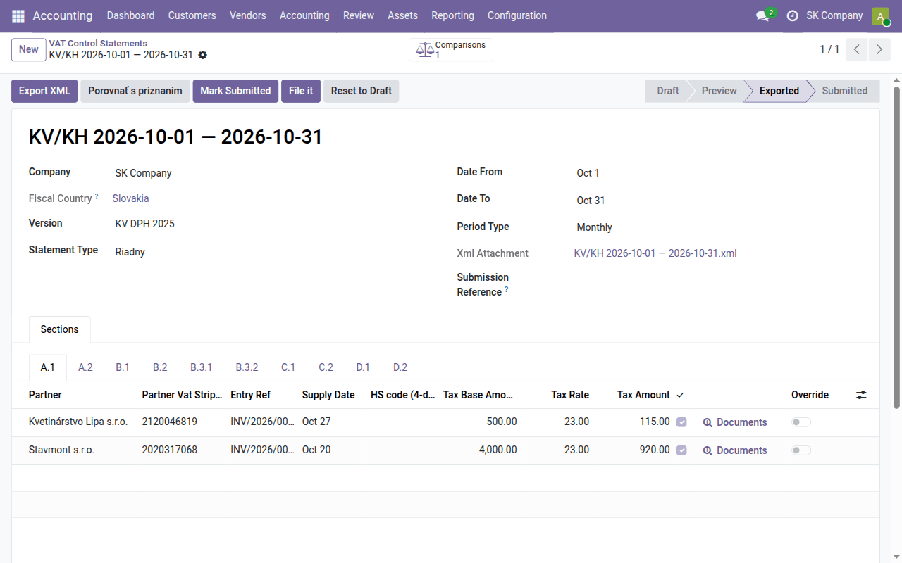
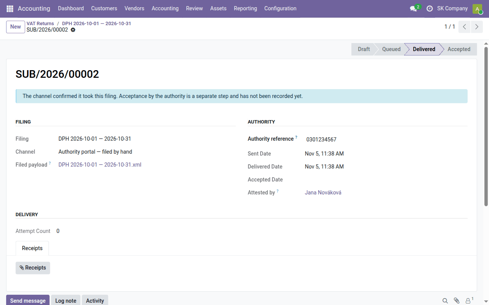
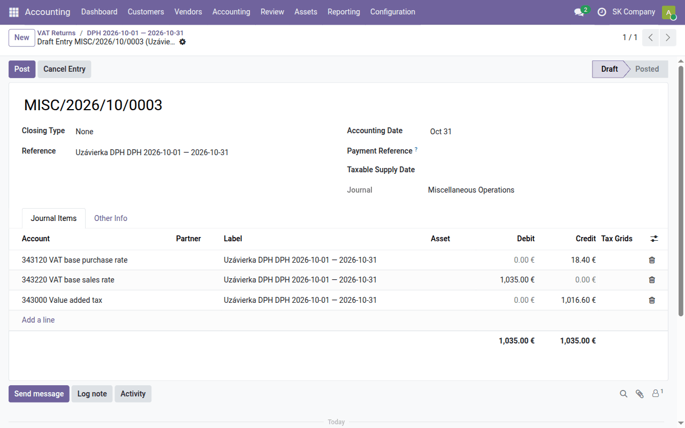

Task guide
Month-end VAT close
The monthly VAT return, control statement and EC sales list — computing them, checking them against the books, exporting the XML, filing, the VAT closing entry and locking the period.
| Country | Slovakia |
|---|---|
| Edition | Odoo Community |
| Covers | l10n_cssk_vat_return_base, l10n_sk_vat_return, l10n_cssk_kv_kh_base, l10n_sk_kv_dph, l10n_cssk_ec_summary_base, l10n_sk_ec_sales, l10n_cssk_submission_base, l10n_sk_datadance |
What this guide is for
This guide walks through the monthly VAT close as the accountant of a monthly VAT payer does it: compute the VAT return (daňové priznanie k DPH), the control statement (kontrolný výkaz DPH) and the EC sales list (súhrnný výkaz), check them against the books and against each other, export the XML for filing, record the filing, post the closing of the 343 accounts and lock the period.
All three statements are in Accounting → Reporting → Statutory Reports. The documents they are computed from come from Daily bookkeeping; taxes and fiscal positions from Setting up account assignment.
The VAT return and the control statement are due, and the VAT payable must be paid, 25 days after the end of the period (§ 78(1) and (4), § 78a).
Before the first close
Once, before the first filing:
- The company's IČ DPH and DIČ — in the company data (Settings → Companies). The XML header takes them from there, with the name and address.
- Tax office — Accounting → Configuration → Settings, field Default Tax Authority. Without it the XML is exported with an empty tax office and the Financial Administration's portal rejects it.
- VAT closing accounts — in the same settings, block VAT Closing: the account the 343 accounts are cleared into (by default 343000 Value added tax), the rounding accounts (548000 and 648000) and the rounding tolerance. Empty accounts mean these defaults.
- Access — every Accountant can prepare the statements. Attesting a filing needs the role Statutory submissions: file — set it in Settings → Users, field Accounting. That role includes the Accountant rights.
Which documents belong to the period
The VAT return does not select documents by one date:
| Side | A document belongs to the period by its |
|---|---|
| Output VAT (customer invoices, credit notes) | taxable supply date (when the VAT liability arose) |
| Input VAT deduction (vendor bills) | accounting date — the period in which you post the bill and claim the deduction |
| Entries, bank, cash | accounting date |
To claim the deduction of a vendor bill in a different period from the one you post it in, fill in VAT period declared on the bill; it takes precedence over the accounting date.
Before computing, check that every invoice with a supply date in the month is posted, and every vendor bill whose deduction you want to claim.
VAT return
Accounting → Reporting → Statutory Reports → VAT Return → New:
- Date From and Date To — the first and last day of the month.
- Version — Odoo offers only the form version valid for the period (for 2026, DPH 2025); select it.
- Statement Type Riadny (regular) and Period Type Monthly.
- Click Compute.
The return moves to Preview and the Lines tab lists every row of the
form with its computed value: Code is the form's row number and Name its
caption on the form, in Slovak, most specific part first (for example r03
Základ dane — základná sadzba dane — Dodanie tovaru a služby…, the base at
the standard rate). Rows named (internal) are Odoo subtotals that are not
on the form.

On each row:
- Documents opens the journal items the row is computed from — and from there the invoice.
- ✓ is ticked when the row equals the sum of its journal items. The green Rows tie out button in the header says all of them do; otherwise a red Unreconciled rows button replaces it and lists the ones that don't.
- Override and Manual Value — type a row's value by hand (for example a carry-over from another system); Compute keeps the override and carries it into the total rows.
The Settlement tab shows the excess deduction from the prior period, whether you carry it forward (Carry excess deduction), and the resulting To pay / (refund). The Hlavička tab holds who files the return and the authorised person (name, phone, e-mail) written into the XML.
Checking against the books
The Porovnať s účtovníctvom button compares the return with the books:
| Comparison row | What must agree |
|---|---|
| Output VAT | row r17 = VAT posted to the 343 accounts by sales taxes |
| Deducted VAT | the deductions = VAT posted to the 343 accounts by purchase taxes |
| Tax base ↔ revenue of account class 60 | informational only |
The first two must agree to the cent. A difference means VAT was posted without a tax grid (a manual entry on 343, for example) or the other way round. The third row routinely differs — advances received, revenue without VAT, credit notes of untaxed documents — and is there for orientation only.

When everything agrees, click Export XML. Odoo validates the file against the Financial Administration's official schema before saving it, attaches it to the return (field Xml Attachment) and moves the return to Exported.
VAT control statement
Accounting → Reporting → Statutory Reports → VAT Control Statement → New, the same way as the return: the period, Version (KV DPH 2025), Statement Type Riadny, Period Type Monthly and Compute.
The documents are split into the sections of the form, each on its own tab:
| Section | What it holds |
|---|---|
| A.1 | customer invoices with Slovak VAT to customers with an IČ DPH or IČO |
| A.2 | customer invoices under domestic reverse charge (§ 69(12)) |
| B.1 | vendor bills with self-assessed VAT — domestic reverse charge, goods and services from the EU |
| B.2 | other vendor bills with VAT, with the vendor's invoice number |
| B.3.1, B.3.2 | simplified invoices (till receipts) received — one total, per vendor from €3,000 of deduction |
| C.1, C.2 | credit and debit notes — issued and received, with the corrected invoice's number |
| D.1 | eKasa cash register sales |
| D.2 | other supplies (invoices to non-businesses, for example) as totals per rate |
Every row of A.1 to C.2 carries the partner's IČ DPH, the invoice number, the
supply date, the base, the rate and the VAT. A customer who is a VAT payer but
lands in D.2 instead of A.1 has neither IČ DPH nor IČO in Odoo — add them and
compute again. How documents get into A.2, B.3 and D.1 is described in
l10n_sk_kv_dph.

The Porovnať s priznaním button checks that the control statement and the VAT return of the same period agree: output VAT (A.1 + C.1 against r02 + r04), deducted VAT (B.2 + B.3 + C.2 against the deductions) and self-assessed VAT (B.1). Then Export XML.
EC sales list
You file an EC sales list only for a month in which you supplied goods or
services to VAT payers in another EU state (the EU fiscal positions).
Accounting → Reporting → Statutory Reports → EC Sales List → New, the period
and Compute. Rows are grouped by the customer's VAT number and the supply
code: goods (no code on the form), triangular trade (1) and services (2). The
Porovnať s priznaním button compares the goods with row r14 of the
return. Details are in l10n_sk_ec_sales.
Filing
File the exported XML on the Financial Administration's portal (eDane, or Forms → Load from file on financnasprava.sk) and sign it. Then record in Odoo that it was filed:
- On the return (and the same on the control statement) click File it. A submission opens — the record of the filing, with the channel Authority portal — filed by hand and the filed file.
- Enter the portal's filing number in Authority reference and click Attest filing. The submission moves to Delivered, the return to Submitted, and the history records who filed it.
- When the Financial Administration delivers its confirmation, attach it with the Receipts button and click Attest acceptance.

Mark Submitted does the same without opening the submission — a Draft submission is created in the background so that receipts have somewhere to go. All filings are in Statutory Reports → Submissions.
The VAT closing entry
During the month the VAT sits on 343 sub-accounts per rate and direction (for example 343120 input and 343220 output at the standard rate). On the submitted return click VAT closing entry: Odoo prepares a draft entry that clears them into the settlement account. Check it and Post it.

| Document | Account | Debit | Credit |
|---|---|---|---|
| VAT closing (miscellaneous entry) | 343220 VAT base sales rate | 1,035.00 | |
| 343120 VAT base purchase rate | 18.40 | ||
| 343000 Value added tax | 1,016.60 | ||
| Payment to the tax office (bank statement) | 343000 Value added tax | 1,016.60 | |
| 221004 VÚB banka | 1,016.60 |
After the closing, the balance of 343000 is the amount payable from row r32 (on the debit side for an excess deduction). A small difference within the tolerance, from rounding the rows of the return, goes to 548000 or 648000; a larger one stops the closing — the return then does not agree with the books and the cause must be found (see Checking against the books).
Match the payment on the statement in Reconcile on the Manual operation tab with account 343000 (Bank).
Locking the period
After filing, set Tax Lock Date in Accounting → Accounting → Lock Dates to the last day of the month. Odoo then refuses to post or change anything that would change the VAT of the filed period (Closing a period). A bill that arrives later is posted into the open period.
Corrections after filing
A mistake in a filed return is corrected by a new return: on the filed return click Amended / corrective. A new return for the same period is created, linked to the original:
- Opravný (corrective) — before the filing deadline; it replaces the original.
- Dodatočný (supplementary) — after the deadline; it requires the Difference identification date.
The same applies to the control statement; a supplementary control statement holds only the changed records. Before correcting, move the tax lock date back, and restore it after posting the correcting document.